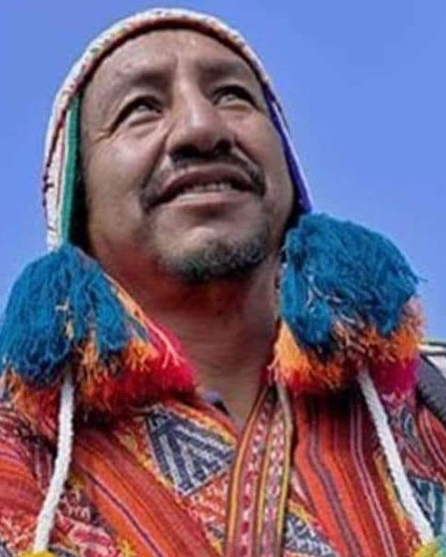
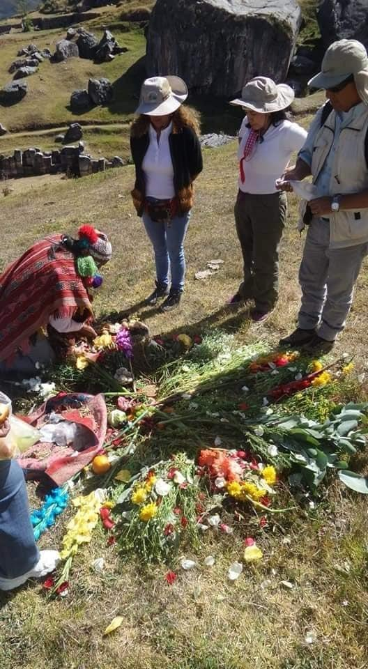
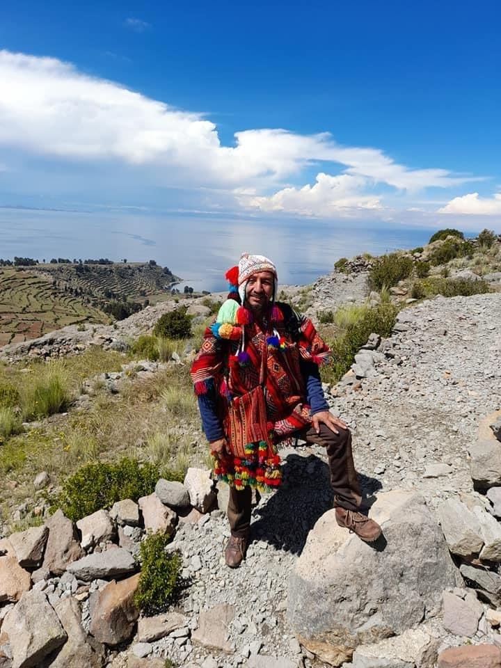
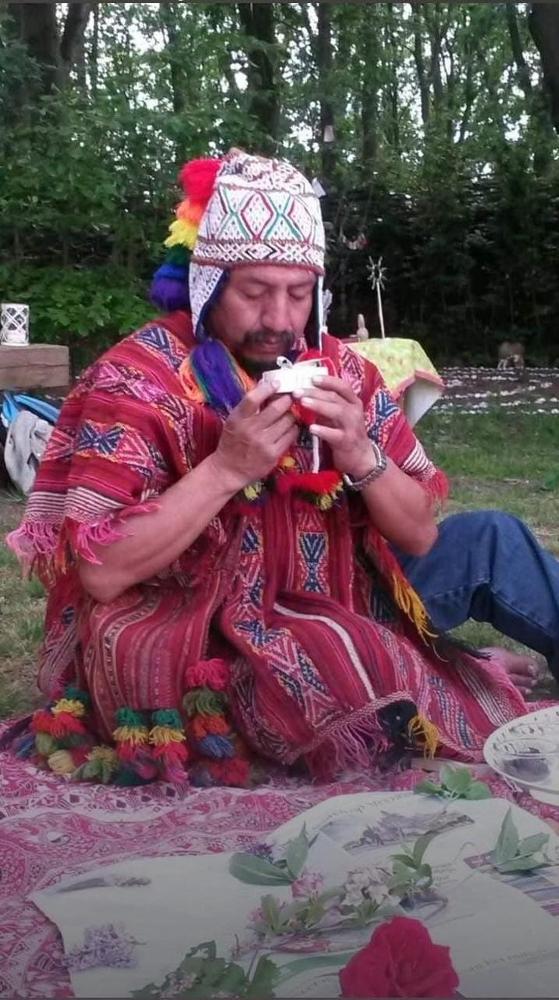
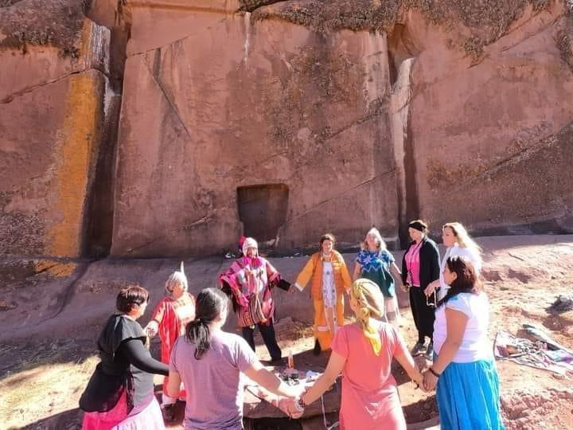
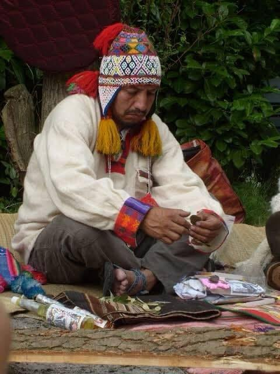
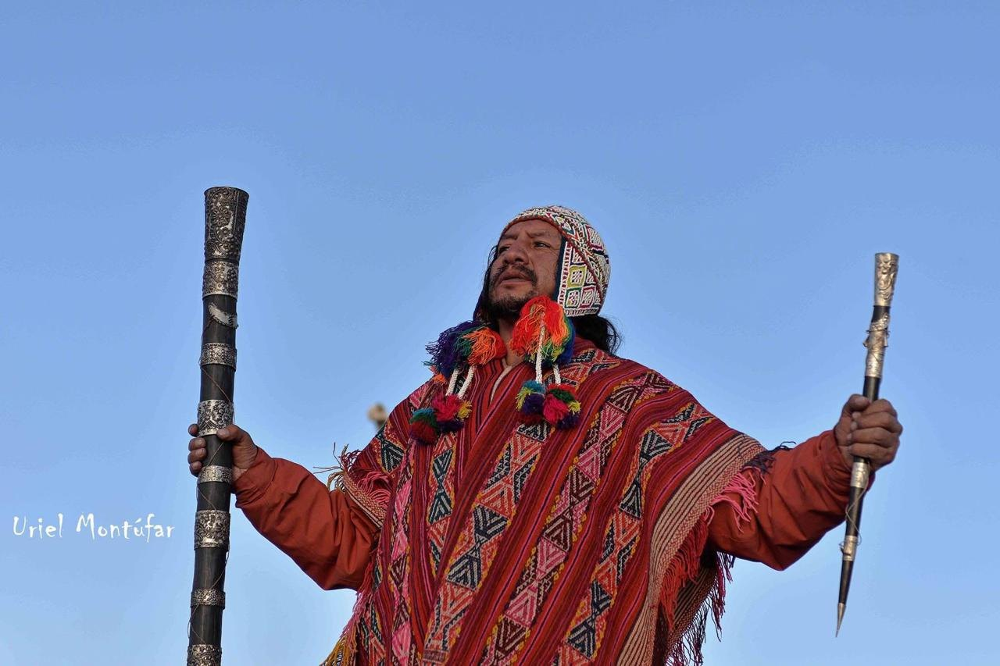
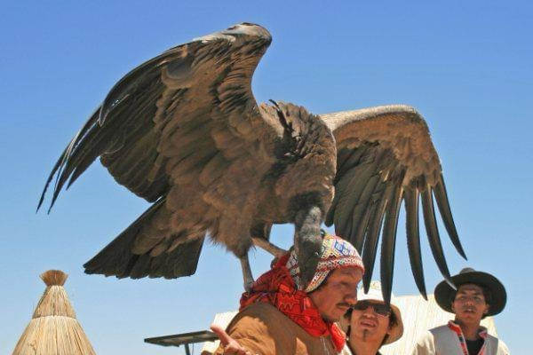
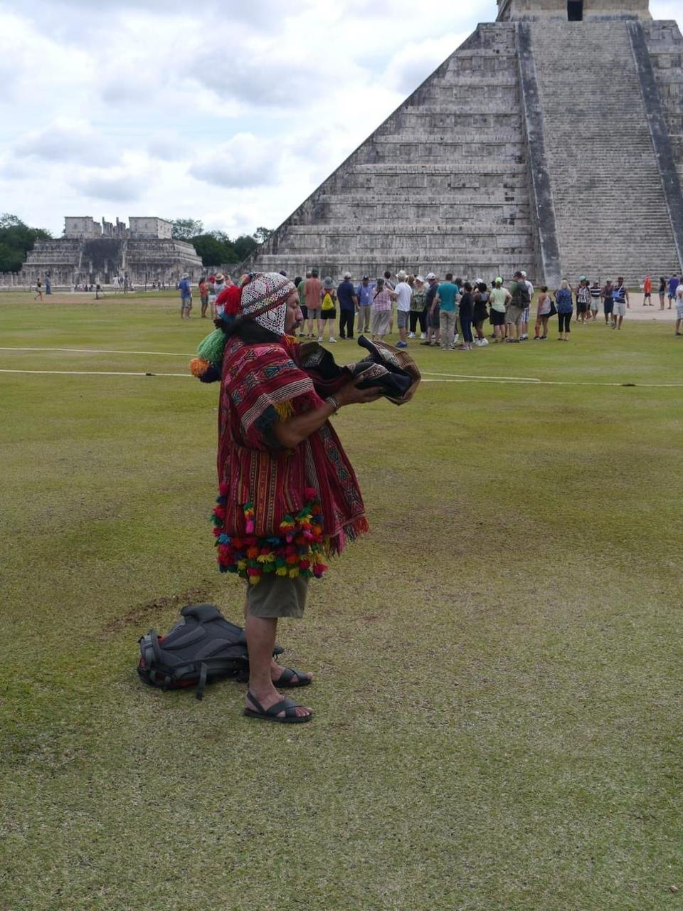
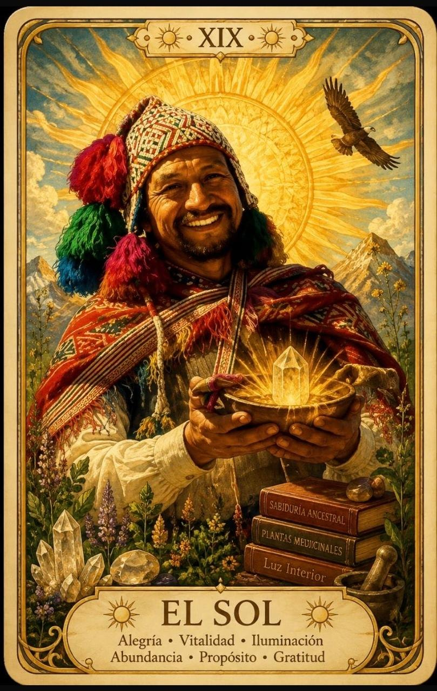

1958
Nace en Cusco, heredero de la curación andina
Llegó al mundo el 21 de agosto de 1958. La tradición de la curación andina le fue transmitida por línea familiar, desde sus ancestros.
0%
Invocando a los Apus
Curandero y chamán, guía de turismo místico
Ceremonias andinas, turismo místico y formación chamánica con Apu Runa, curandero del linaje Pukina. De Cusco a Teotihuacán.

Raúl Juan Tomaylla Lezama, conocido como Apu Runa, es curandero y chamán. Su camino une la herencia de su familia con la enseñanza directa de un gran maestro.
1958
Llegó al mundo el 21 de agosto de 1958. La tradición de la curación andina le fue transmitida por línea familiar, desde sus ancestros.
1999
Fue discípulo del ilustre chamán y curandero de la tradición Willoq, hasta que el venerable maestro trascendió a los 99 años.
2001
Desde entonces guía ceremonias y grupos místicos, y forma a nuevos chamanes en Cusco, Puno y allí donde lo solicitan.
El nombre
Apu es la montaña sagrada que cuida y sostiene a los pueblos. Runa es la persona. Su pueblo lo bautizó así: el gran espíritu del hombre.
Querer, amar y desear, con la fuerza de la voluntad. Hacer que lo que nace en el corazón encuentre camino en los actos.
Recibir de la Pachamama también es saber devolver. Lo que recibimos merece ser agradecido con una ofrenda.
La vida tiene orden, y ningún ser humano es dueño de aquello de lo que, en realidad, solo forma parte.
Cuatro caminos con Apu Runa. Todos parten de lo mismo: respeto por la Tierra y una intención clara.

Fuego, palabra y ofrenda para agradecer, pedir y devolver. Un encuentro con la Pachamama que ordena tu intención.
Preparar mi ofrendaConsulta con el curandero y trabajo de equilibrio, desde la tradición de curación que heredó de su familia y perfeccionó con su maestro.
Estoy listo para sanar
Tu camino
Cuatro pasos simples, sin prisa y sin formularios eternos.

Escribes por WhatsApp qué buscas: sanar, aprender o conocer los Andes.

Apu Runa te orienta entre ceremonia, consulta, viaje o curso, según lo que vives hoy.

Se arma la ofrenda para la Pachamama con intención, respeto y reciprocidad.

Vives la ceremonia, el viaje o el curso junto a quien lleva décadas en este camino.
Si algo en ti ya dijo que sí, el resto es dar el primer paso.
Siento el llamadoGrupo de participantes de blanco frente a la wiphala.
Durante siglos, el Tawantinsuyu y el Anáhuac fueron dos grandes raíces de un mismo continente que crecieron lejos una de otra. Hoy Apu Runa las acerca: lleva la palabra de los Andes a tierras mexicanas, con ofrendas, ceremonias y el Munay como brújula.
Conferencias y cursos en España, Inglaterra, Francia, Holanda y Alemania.
Se instala en Teotihuacán para estudiar las energías de este lugar sagrado y sus alrededores.
Que el cóndor y el águila se reconozcan bajo un mismo cielo.


No. Lo importante es llegar con respeto y una intención clara. Escríbele, cuéntale qué buscas y él te orienta sobre el mejor camino.
Es una forma de devolver a la Madre Tierra lo que de ella recibimos. Se prepara con intención, respeto y reciprocidad dentro de una ceremonia andina.
Nació en Cusco y da cursos en Cusco, Puno y otros lugares de Perú y el extranjero. En 2026 se instaló en Teotihuacán, México. Escríbele para coordinar fecha y lugar.
Sí. Es guía de turismo místico y de grupos místicos desde 1990. Cuéntale tus fechas e intereses por WhatsApp para armar el recorrido.
Apu Runa dicta cursos de preparación de nuevos chamanes en Cusco, Puno y otros lugares de Perú y el extranjero, donde se lo soliciten.
No. Son prácticas espirituales y ancestrales que acompañan tu bienestar. No sustituyen la atención médica profesional.
Cuéntale quién eres y qué camino te llama. Tu mensaje se abre en WhatsApp, listo para enviar.
